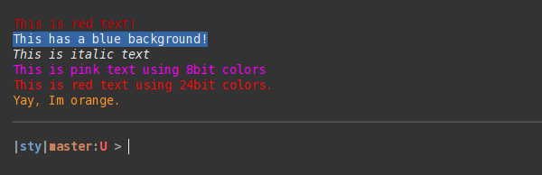
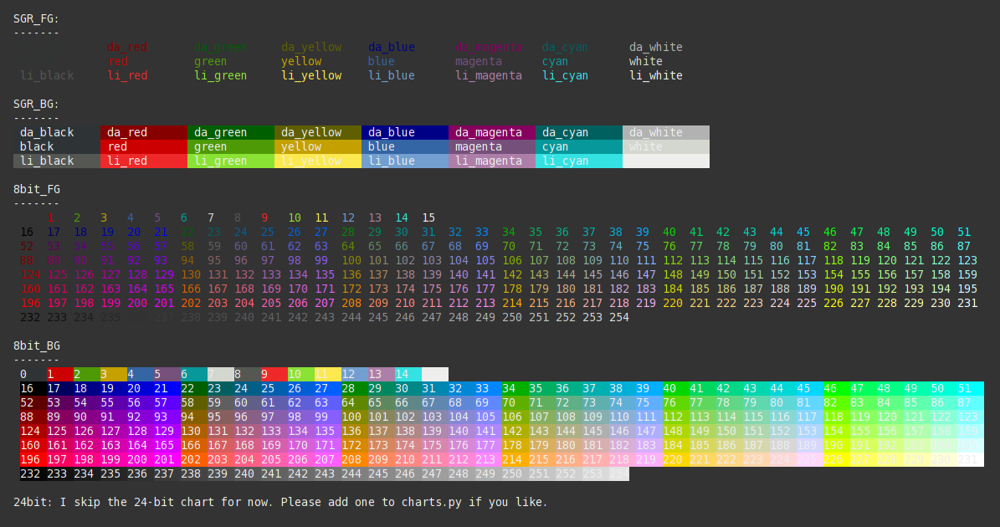

News¶
Release 1.0.0-rc.1 (January 31. 2021)¶
Sty is now fully typed.
Deprecated methods .set_style(…) and .get_style(…) were finally removed.
Release 1.0.0-rc.0 (January 08. 2021)¶
Sty version 1.0.0 is now feature complete.
I’m going to support Python version >=3.7 indefinitely.
Sty will follow semver so there won’t be any breaking changes for version 1.x.x after 1.0.0 was released.
This is a pre-release (rc.0). I’ll release 1.0.0 in a couple of month if no major bugs are reported.
Description¶
Simple, flexible and extensible string styling for your terminal. Supports 3/4bit, 8bit and 24bit (truecolor, rgb) colors. Should work on most Unix platfroms with most terminals. Works with recent Windows terminals. Window legacy terminal (cmd) needs a shim to work.
Sty comes with default color palettes and renderers, but you can easily replace/customize them, without touching the markup.
Sty’s goal is to provide Python with a little string styling markup, which is decoupled from color palettes and terminal implementations.
Sty has no dependencies.
If you run into compatibility problems with sty, please file an issue!
Code Example¶
from sty import bg, ef, fg, rs
foo = fg.red + "This is red text!" + fg.rs
bar = bg.blue + "This has a blue background!" + bg.rs
baz = ef.italic + "This is italic text" + rs.italic
qux = fg(201) + "This is pink text using 8bit colors" + fg.rs
qui = fg(255, 10, 10) + "This is red text using 24bit colors." + fg.rs
# Add custom colors:
from sty import RgbFg, Style
fg.orange = Style(RgbFg(255, 150, 50))
buf = fg.orange + "Yay, Im orange." + fg.rs
print(foo, bar, baz, qux, qui, buf, sep="\n")
The code above will print like this in the terminal:
Demo¶
